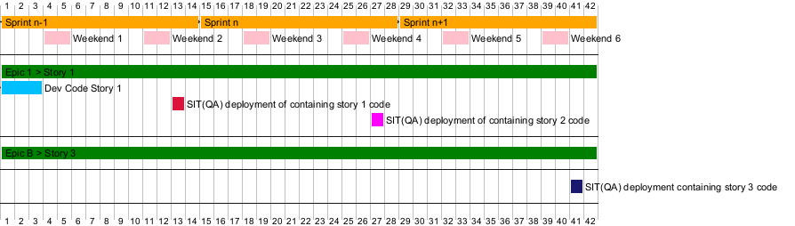

@startgantt
'https://plantuml.com/gantt-diagram
printscale daily zoom 1
' Sprint n-1
[Sprint n-1] lasts 14 days and is colored in Orange
' Sprint n
[Sprint n] lasts 14 days and is colored in Orange and starts after [Sprint n-1]`s end
' Sprint n+1
[Sprint n+1] lasts 14 days and is colored in Orange and starts after [Sprint n]`s end
[Sprint n] displays on same row as [Sprint n-1]
[Sprint n+1] displays on same row as [Sprint n]
' weekends
[Weekend 1] lasts 2 days and is colored in pink and starts 3 days after start
[Weekend 2] lasts 2 days and is colored in pink and starts 10 days after start
[Weekend 3] lasts 2 days and is colored in pink and starts 17 days after start
[Weekend 4] lasts 2 days and is colored in pink and starts 24 days after start
[Weekend 5] lasts 2 days and is colored in pink and starts 31 days after start
[Weekend 6] lasts 2 days and is colored in pink and starts 38 days after start
[Weekend 2] displays on same row as [Weekend 1]
[Weekend 3] displays on same row as [Weekend 2]
[Weekend 4] displays on same row as [Weekend 3]
[Weekend 5] displays on same row as [Weekend 4]
[Weekend 6] displays on same row as [Weekend 5]
--
[Epic 1 > Story 1] lasts 42 days and is colored in lightgreen
' Story 1 on CI (DEV)
[Epic 1 > Story 1] lasts 42 days and is colored in green
[Dev Code Story 1] lasts 3 days and is colored in DeepSkyBlue and starts after [Sprint n-1]'s start
' Story 1 on SIT (QA)
[SIT(QA) deployment of containing story 1 code] lasts 1 days and is colored in Crimson and starts after [Weekend 2]'s end with transparent link
' Story 2 on CI (DEV)
' Story 2 on SIT (QA)
[SIT(QA) deployment of containing story 2 code] lasts 1 days and is colored in Fuchsia and starts after [Weekend 4]'s end with transparent link
--
' Story 3 on CI (DEV)
[Epic B > Story 3] lasts 42 days and is colored in green
--
' Story 3 on SIT (QA)
[SIT(QA) deployment containing story 3 code] lasts 1 days and is colored in midnightBlue and starts after [Weekend 6]'s end with transparent link
--
@endgantt